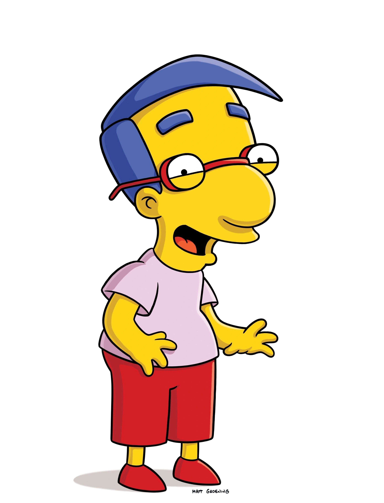
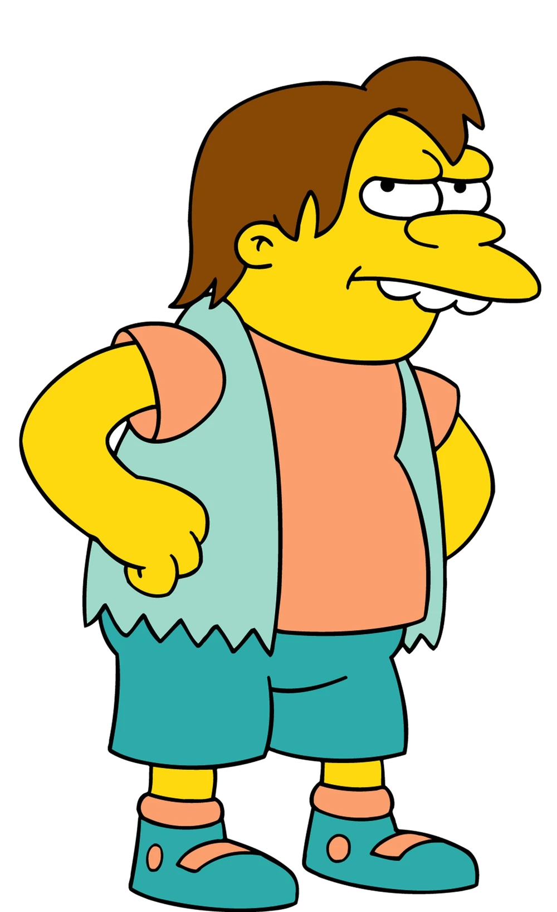
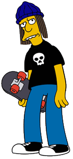
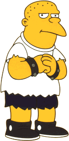
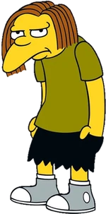

Bart Simpson Bart es decididamente el más rebelde y travieso de la familia. Es un muchacho simpático y también muy travieso, que hace muchas bromas con su mejor amigo Milhouse. Sigue los programas de su ídolo Krusty el Payaso. Es desobediente y hace todo lo que le pasa por la cabeza. Su nombre es un anagrama de "brat", que en inglés significa "travieso". Su ideología es "yo no fui, nadie me vio, no pueden demostrarlo". También en un capítulo Seymour Skinner descubre que es alérgico al camarón.

Milhouse Van Houten Milhouse, como todo niño, va a la Escuela Primaria de Springfield, en la que es agredido diariamente por los bravucones de la escuela, Jimbo, Dolph y Kearney; es agredido por mucha gente como Nelson, y hasta ha sido agredido por Lisa. En una ocasión, Bart, incluyó a Milhouse en La lista de los más buscados del FBI, Bart siempre mete en problemas a Milhouse, y le ayuda en diferentes cosas, como en separar a sus padres; casualmente, Milhouse se hizo amigo de Bart cuando Bart se volvió gracioso haciendo sonidos de gases a Milhouse.

Nelson Muntz Un rasgo importante de él es su permanente actitud matonesca y la expresión de satisfacción "Ha-Haaa!", que expresa luego de agredir a los demás. En realidad, Nelson es una víctima y producto de una familia disfuncional en extremo siendo su madre la más inconsciente de su acciones. Una vez mencionó que tenía una hermana, pero también dijo que podría haber fallecido. Su padre le dejó tras haber dicho que fue a comprar cigarrillos, pero nunca volvió. Por lo tanto, Nelson ha llegado a alucinar con él. Aun así, su padre sigue reapareciendo en la serie. Su padre regresa a casa y, al comer una barra de chocolate, que no sabía que tenía cacahuetes/maníes. Esto le produce alergia, que le hace parecerse a Joseph Merrick, "El Hombre Elefante"; se ve obligado a irse a vivir a un circo.

Jimbo Jones Es visto en la mayoría de veces como un rudo y fuerte brabucón que domina, junto con sus tres compañeros, la escuela. Aunque es demostrado que no es más que un cobarde, incluso suele ver telenovelas con su madre y llorar. Por ejemplo, planeaba poner una bomba apestosa en la escuela. También es uno de los ayudantes del Campamento Krusty en "Kamp Krusty". Por otro lado, se lo ve de novio con Laura Powers aunque ella lo deja debido al gran susto que le da Moe cuando lo amenaza con un cuchillo aunque no le iba a hacer nada. En una ocasión, el Sr. Burns se hace pasar por Jimbo para conseguir el dinero recaudado por la escuela luego de encontrar petróleo en ella. Jimbo también es visto junto a su familia.

Kearney Zzyzwicz Kearney es uno de los bravucones de la Escuela Primaria de Springfield junto con Dolph y Jimbo, y Nelson, fue compañero de Otto, por lo que se deja en evidencia que repitio varios cursos. Es de estatura media alta, de gran contextura, y es calvo. Kearney es el abusón con el hábito de golpear con su puño su otra mano, lleva una pulsera con puntas en cada mano, parece ser metalero. Aunque aparenta ser solo unos años más grande que Bart, puede conducir, ha salido con la madre de Jimbo (él insiste en que ella inició la relación), y ha sido visto afeitándose, además de fumando. Más notablemente es el hecho que tiene un hijo pequeño (que duerme en un cajón), a quien ha entrenado para ser un abusón también pateando el castillo de arena de Rod y Todd Flanders.

Dolph Starbeam Según "El Libro de Bart" (un libro con información sobre la serie) le gusta hablar con las nubes. También se ve que es judio, ya que menciona haber celebrado su Bar Mitzvá en un restaurante de marisco ubicado en el bosque. Se le ha visto con una variación de su camisa en azul. Su avatar es un cíclope. Aunque no tiene novia, la madre de Jimbo Jones le parece bastante guapa. Se puede notar que no tiene cabello. Parece ser fanático de bandas de heavy metal como Metallica, Judas Priest, Black Sabbath y su preferida, Megadeth.